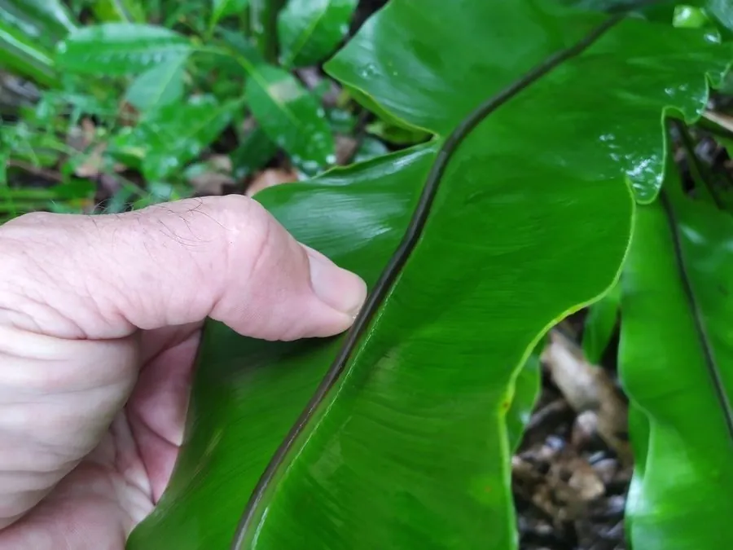

蕨类与裸子植物 · 植物界
鸟巢蕨 Asplenium nidus

鸟巢蕨的叶片向四周放射生长，形如巨大的鸟巢，能收集落叶与腐殖质，是热带雨林中的大型附生蕨类。
- 分类
- 门蕨类植物门纲水龙骨纲目水龙骨目科铁角蕨科属铁角蕨属
- 栖息环境
- 热带雨林中树干、岩壁与林冠层，喜高温高湿和半阴环境
- 地理分布
- 中国华南、西南及台湾地区，东南亚、大洋洲的热带雨林
- 保护级别
- 暂无评估；野生种群受雨林砍伐影响
物种志
鸟巢蕨是铁角蕨科的大型附生蕨类，株高可达 1 m 以上。它的根状茎短粗，密生鳞片和须根，整株呈漏斗状或鸟巢状。叶片阔披针形，革质，边缘微波状或全缘，亮绿色，自中心向四周放射状伸展，叶面中脉明显。新叶从中心卷曲抽出，老叶在外围舒展，层层叠叠形成能承接雨水与落叶的“巢”。孢子囊群线形，沿叶脉斜向排列。
在野外，鸟巢蕨常附生于热带雨林中的树干、岩石或林冠层，靠“鸟巢”结构收集落叶和动物粪便，从中吸收养分，是与众不同的收集型附生植物。它喜温暖、高湿与半阴环境，怕强光直射和低温，多用孢子繁殖或分株。鸟巢蕨叶片舒展大气，是室内观叶与雨林景观的常见材料；嫩叶在东南亚和我国台湾地区还作为蔬菜食用，俗称“山苏”。
形态与习性
- 株高60–120 cm，叶展可达 1 m 以上
- 叶阔披针形，革质，亮绿色
- 孢子囊群线形，沿叶脉斜向排列
- 习性附生于树干和岩壁，收集落叶为养分
- 温度喜高温，怕低温霜冻
- 用途室内观叶，嫩叶可作蔬菜
- 繁殖孢子繁殖或分株繁殖
趣味知识
- 鸟巢蕨的漏斗状叶丛能收集落叶，腐烂后变成自己的“肥料”。
- 它的嫩叶在台湾被称为“山苏”，是受欢迎的野菜。
- 附生不等于寄生，鸟巢蕨只是借树干栖身，并不吸取树液。